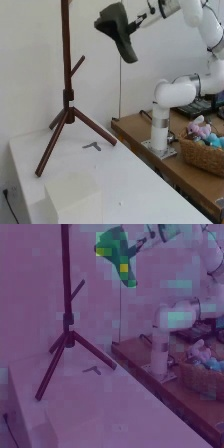
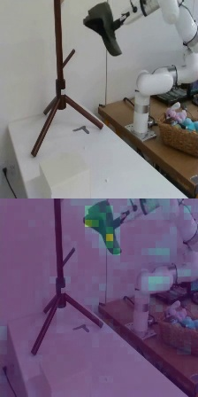
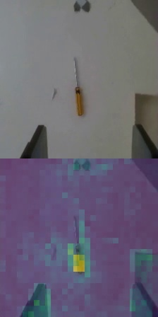
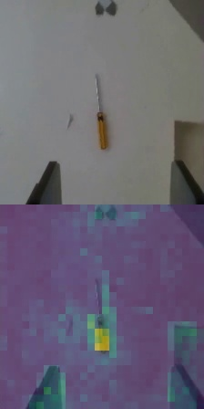

Method Overview
Prior approaches for learning visuomotor policies either learn from scratch, as shown in (a), or learn from a pre-trained visual representation with a frozen backbone, as shown in (b). As the pre-trained vision network is typically large, it is frozen to save computation. In this way, the frozen representation might not be suited for downstream tasks due to differences in domains and the tasks.

We propose SpawnNet, as shown in (c). SpawnNet trains a separate stream of convolutional neural networks (CNN) from scratch, taking the raw observation as input. At the same time, we design adapter modules to fuse the new stream with the pre-trained features at different layers, taking advantage of the robust features as needed. Additionally, this architecture allows us to incorporate different modalities like depth in this separate stream, which is typically not in the pre-trained vision networks.
Results
We evaluate our policy against baselines on 2 simulated tasks and 3 real-world tasks. Within these tasks, we test difficult intra-category generalization by training on several seen training instances, and evaluating on the unseen held-out instances.
In simulation, we perform DAgger to decouple covariate shift from visual representations; we train image-based policies by imitating from the RL expert policies trained using PPO. In the real world, we train using behavior cloning (BC) with fewer instances seen during training.
SpawnNet significantly outperforms other pre-training methods (MVP and R3M) and a learning-from-scratch baseline with data augmentation when tested on held-out novel objects.
Visualizations
Below we show rollouts of our trained policies on different tasks, with one video on each of the training and held-out objects. Click on each of the tabs below to see different tasks. The videos with borders colored blue are the training instances. The videos with borders colored red are the held-out instances. For simulation tasks, we highlight the border of the video with green once the goal is achieved.
The task is to pick up different bags by the handle and to palce them on a shelf. Bags vary significantly in shape, color, and geometry of the handle. The bags' position, rotation, and height are varied. We train on 3 bags and evaluate on 6 hold out bags.
Training
Novel
The task is to pick up the hat and then hang it on a rack. Hats vary in color and shape of the brim; they also deform slightly during the task. The hat's rotation and position are slightly varied. We train on 3 hats and evaluate on 6 hold out hats.
Training
Novel
The task is to pick up the tool on the table, place it into an open drawer and then close the drawer. Here, different drawers vary drastically in the geometry and color. The tool's position and rotation are varied. The drawer's position and rotation are also varied. We train on 3 drawers and evaluate on 6 hold out drawers.
Training
Novel
The task is to open doors either leftward or rightward in varying positions. The red ball indicates which door to open. We train on 20 different instances and evaluate on 8 hold out instances.
Training
Novel
The task is to open different drawers. A red ball is placed near the drawer to be opened. We train on 21 different instances and evaluate on 12 hold out instances.
Training
Novel
What does SpawnNet learn from the pre-trained network?
We provide more insights into how SpawnNet's use of pre-trained features can help policy learning. To do so, we take a trained policy and visualize the norm of the features after the 1x1 convolutions and the nonlinear layers in the last layer of the adapter. We can see that activations for tasks are consistent both across different instances and across time, and relevant to the task at hand. This occurs even with unseen instances. This provides insights into how pre-trained features can help with generalization.
We visualize one seen instance (highlighted blue), and three unseen instances (highlighted red).
Place Bag: when grasping the bag, the adapter highlights the handle for even bags with differently colored handles and geometrically different handles.
Place Bag: when placing the bag, the adapter highlights the base of the bag and the table.
Hang Hat: when grasping the hat, the adapter highlights relevant parts of the hat, such as the brim and front.
 

Hang Hat: when hanging the hat, the adapter highlights relevant parts of the hat, such as the back edge.
 

Tidy Tools: when grasping the tool, the adapter highlights its handle, even with novel drawers in the background.
Tidy Tools: when placing the tool in the drawer, the adapter highlights the drawer's front edge.
Failure Modes
Our experiments mainly study policy generalization under imitation learning settings, which requires the action distributions to be similar in training and evaluation tasks. For this reason, we only evaluate the policy on novel instances, without heavily extrapolating the pose of instances, as an out-of-distribution pose can cause a drastic change of motion. Below we can see that our learned policies will fail when pose of the objects vary too much from training. This can potentially be addressed in an interactive learning setting. We leave the combination of SpawnNet and reinforcement learning algorithms to future work.
BibTeX
@inproceedings{lin2023generalize,
title={x},
author={x},
journal={x},
year={x}
}